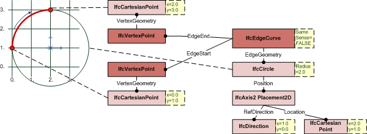

Figure 390 — Edge curve usage
| Kante - Topologie mit expliziter Geometrie |
An IfcEdgeCurve defines two vertices being connected topologically including the geometric representation of the connection.
 |
EXAMPLE Figure 389 illustrates an example where the edge geometry is given by an unbounded curve, here IfcCircle. The bounds are provided by the EdgeStart and EdgeEnd, the topological direction of the IfcEdgeCurve opposes the direction of the IfcCircle by SameSense = FALSE. |
|
Figure 389 — Edge curve |
NOTE Definition according to ISO/CD 10303-42:1992
An edge curve is a special subtype of edge which has its geometry fully defined. The geometry is defined by associating the edge with a curve which may be unbounded. As the topological and geometric directions may be opposed, an indicator (same sense) is used to identify whether the edge and curve directions agree or are opposed. The Boolean value indicates whether the curve direction agrees with (TRUE) or is in the opposite direction (FALSE) to the edge direction. Any geometry associated with the vertices of the edge shall be consistent with the edge geometry. Multiple edges can reference the same curve.
NOTE Entity adapted from edge_curve defined in ISO 10303-42.
HISTORY New entity in IFC2x.
Informal Propositions:
Figure 390 illustrates edge curve usage.
|
Figure 390 — Edge curve usage |
XSD Specification:
<xs:element name="IfcEdgeCurve" type="ifc:IfcEdgeCurve" substitutionGroup="ifc:IfcEdge" nillable="true"/>EXPRESS Specification:
| ENTITY IfcEdgeCurve |
| SUBTYPE OF IfcEdge; |
|
| END_ENTITY; |
Attribute Definitions:
| EdgeGeometry | : | The curve which defines the shape and spatial location of the edge. This curve may be unbounded and is implicitly trimmed by the vertices of the edge; this defines the edge domain. Multiple edges can reference the same curve. |
| SameSense | : | This logical flag indicates whether (TRUE), or not (FALSE) the senses of the edge and the curve defining the edge geometry are the same. The sense of an edge is from the edge start vertex to the edge end vertex; the sense of a curve is in the direction of increasing parameter. |
Inheritance Graph:
| ENTITY IfcEdgeCurve |
| ENTITY IfcRepresentationItem |
| INVERSE |
|
| ENTITY IfcTopologicalRepresentationItem |
| ENTITY IfcEdge |
|
| ENTITY IfcEdgeCurve |
|
| END_ENTITY; |
 EXPRESS-G diagram
EXPRESS-G diagram Link to this page
Link to this page